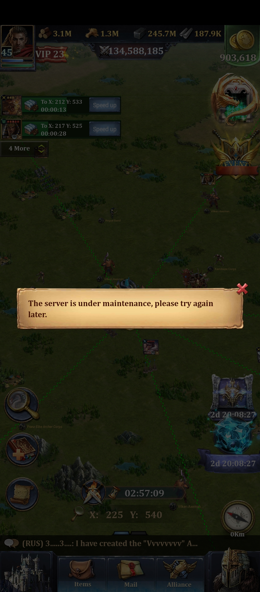
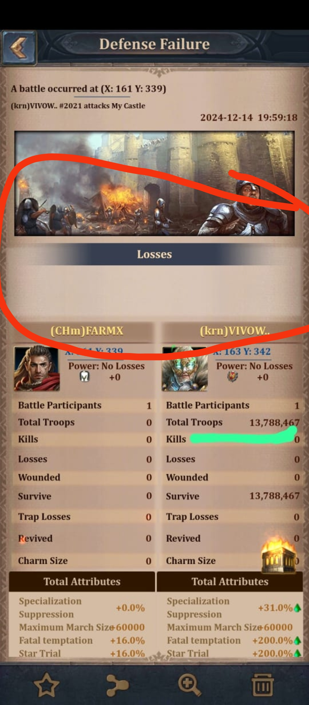
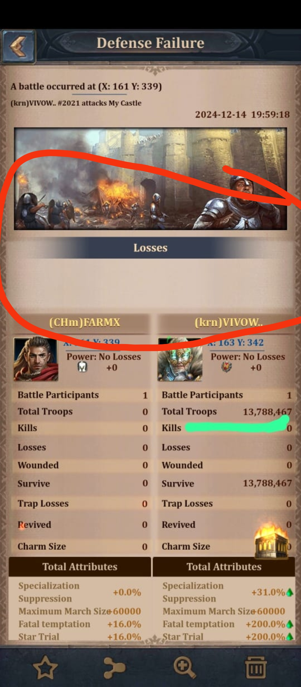

CROSS-SERVER ISSUES :
There are many bugs when we cross the server last time i( VIVOW ) went to loot resource from my farm and faced following issues :
issue 1) when we go to another kingdom game starts legging, it doesnt open for long time and it says that server under maintanance, respective screenshot is provided below :
 issue 2) when i went in k2021 using my farm of k63, the plarer from k2021 wasnt able to attack me, he is able to send only two marches at once, when he tries to send 3rd march, it says as invalid operation, which makes it more complicated to loot resource from other kingdoms, respective video proof of issue is provided below :
 we gets zero loot of resources, when we send troops more than 8 to 9 million then troops comes up with zero resource, we attacks on the farm toloot resource but we get nothing, respective screenshot is provided below :

we gets zero loot of resources, when we send troops more than 8 to 9 million then troops comes up with zero resource, we attacks on the farm toloot resource but we get nothing, respective screenshot is provided below :
